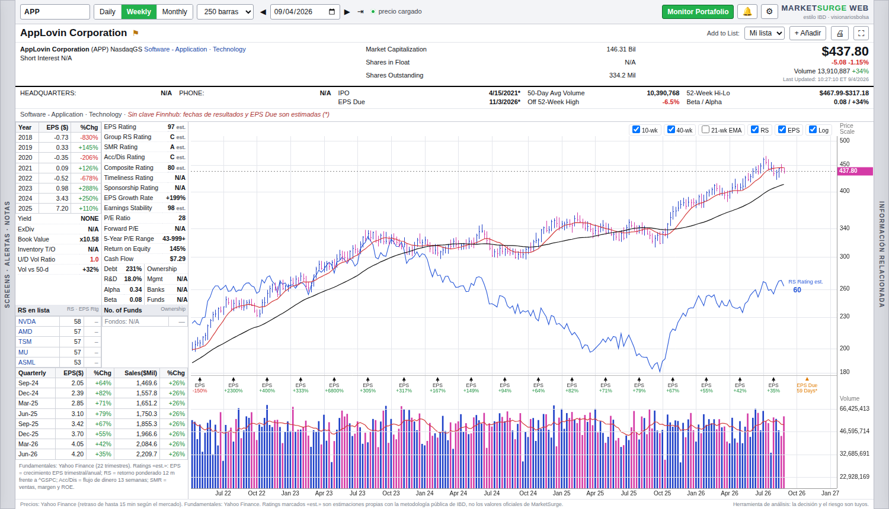
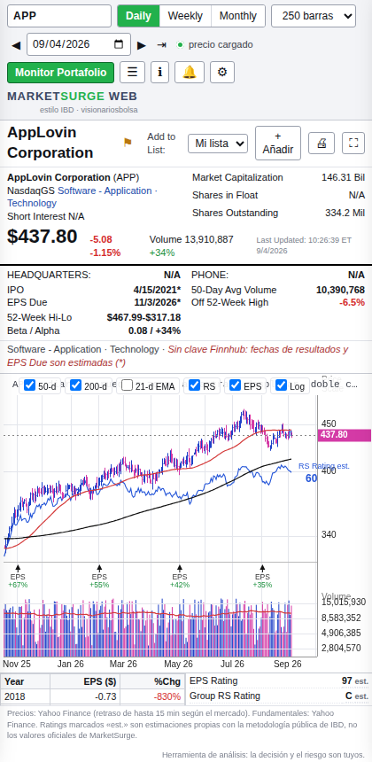

Cómo abrir la pantalla en la laptop y en el celular, cómo leer cada zona del gráfico estilo IBD y cómo usar listas, alertas, notas y el screen para tomar decisiones de inversión.
MarketSurge Web es una página que reproduce la pantalla de análisis de MarketSurge (Investor's Business Daily) con datos gratuitos. Se abre en cualquier navegador, no requiere instalar programas y guarda tus listas, notas y alertas en el propio navegador.
Si al abrirla ves «No se pudo cargar»: los proxies públicos de Yahoo se saturan con frecuencia. Ve a Ajustes ⚙, cambia la «Fuente de precios» a Twelve Data y pega una clave gratuita. Está explicado en el apartado 11.
Forma parte del mismo sitio que el Monitor de Portafolio. Son dos archivos:
index.html, el monitor de posiciones con RSI, metas y stop-loss.marketsurge.html, la pantalla de gráfico con ratings, línea RS, resultados y fundamentales.Ambos se enlazan entre sí: el botón verde Monitor Portafolio lleva al monitor, y el botón 📈 MarketSurge del monitor abre esta pantalla.

Hay tres formas. La primera es la recomendada porque siempre carga la última versión publicada.
marketsurge.html. Con el repositorio publicado en GitHub Pages queda así:https://ggallo100.github.io/MONITOR-FINAL/marketsurge.htmlmarketsurge.html#NVDA.Si la dirección no responde, GitHub Pages no está activado: en el repositorio ve a Settings → Pages, elige Deploy from a branch, rama main, carpeta / (root) y guarda. Tarda uno o dos minutos en publicarse.
marketsurge.html. Se abre en el navegador predeterminado y carga datos igual que en línea.Pantalla recomendada: 1366 píxeles de ancho o más. Con ventanas estrechas el panel de datos pasa debajo del gráfico, igual que en el celular.
La misma dirección funciona en el teléfono. Instálala en la pantalla de inicio para que abra a pantalla completa como una app.
https://ggallo100.github.io/MONITOR-FINAL/marketsurge.html.
APP) y pulsa Intro. También puedes escribir el nombre de la empresa y elegir en la lista de sugerencias.Símbolos que admite: cualquiera que exista en Yahoo Finance. Acciones de Estados Unidos por su ticker (NVDA), ETF (GLD, SOXL), índices con acento circunflejo (^GSPC, ^VIX) y bolsas extranjeras con sufijo (ASML.AS, SAN.MC).
La pantalla sigue el orden de MarketSurge. De arriba abajo y de izquierda a derecha:
| Vista | Línea roja | Línea negra | Línea verde (apagada por defecto) |
|---|---|---|---|
| Weekly | Media de 10 semanas | Media de 40 semanas | EMA de 21 semanas |
| Daily | Media de 50 días | Media de 200 días | EMA de 21 días |
| Monthly | Media de 10 meses | Media de 40 meses | EMA de 21 meses |
Una acción líder suele cotizar por encima de la media de 10 semanas y ésta por encima de la de 40. Cuando el precio cae bajo la de 40 semanas con volumen, la tendencia intermedia está rota.
Es el precio dividido por el S&P 500 (se puede cambiar el índice en Ajustes). Si sube, la acción va mejor que el mercado; si baja, va peor aunque el precio suba. Al final de la línea aparece el RS Rating est., de 1 a 99. Una línea RS que marca máximos antes que el precio es una de las señales que más valora IBD.
*) significa fecha estimada: cierre del trimestre más 35 días. Con clave de Finnhub se usan las fechas confirmadas.Las barras usan el mismo color que el precio. La línea roja es la media de 50 días (10 semanas en la vista semanal). Una ruptura vale cuando el volumen supera claramente esa media; una caída con volumen alto es distribución.
Los ratings de IBD son propietarios. Esta herramienta los reconstruye con la metodología pública de IBD y los marca con la etiqueta est. Sirven para comparar acciones entre sí y para filtrar, no como cifra oficial de MarketSurge.
| Dato | Cómo se calcula aquí | Estado |
|---|---|---|
| EPS Rating | Crecimiento del EPS de los dos últimos trimestres y crecimiento anual de tres años, convertido a percentil 1-99. Sin beneficios no pasa de 45. | est. |
| RS Rating | Retorno de 12 meses ponderado como hace IBD (40 % el último trimestre, 20 % cada uno de los tres anteriores) frente al índice, convertido a 1-99. | est. |
| Acc/Dis Rating | Flujo de dinero de las últimas 13 semanas: dónde cierra cada día dentro de su rango y volumen en días alcistas frente a bajistas. Letras A a E. | est. |
| SMR Rating | Crecimiento de ventas, margen antes de impuestos y ROE. Letras A a E. | est. |
| Composite Rating | Media ponderada de EPS, RS, Acc/Dis, SMR y distancia al máximo de 52 semanas. | est. |
| Group RS Rating | Media del RS de los pares del grupo (con Finnhub) o de tu lista activa. | est. |
| Timeliness, Sponsorship, flotante, interés en corto, propiedad de fondos | No existen en fuentes gratuitas. Se muestran como N/A. | N/A |
| EPS anual y trimestral, ventas, P/E, ROE, deuda, I+D, flujo de caja, valor en libros | Directamente de los estados financieros publicados en Yahoo Finance. Hasta 22 trimestres. | real |
| Beta y Alpha | Regresión de los retornos diarios del último año frente al índice. Alfa anualizada. | calc. |
| U/D Vol Ratio | Volumen de los días alcistas dividido por el de los bajistas en 50 días. Por encima de 1 hay acumulación. | calc. |
La pestaña vertical SCREENS · ALERTAS · NOTAS del borde izquierdo (botón ☰ en el celular) abre un cajón con cuatro pestañas.
Un bloc de texto por símbolo que se guarda solo. Úsalo para la tesis, el pivote del patrón, el stop y los catalizadores. Debajo está el plan de posición, explicado en el siguiente apartado.
Dónde se guardan: listas, alertas y notas viven en el navegador de ese dispositivo. La laptop y el celular no se sincronizan entre sí. Para pasar una lista, usa Exportar en uno e Importar en el otro.
En la pestaña Screens marca los criterios y pulsa Ejecutar screen. La herramienta descarga un año de cada símbolo de la lista activa y muestra los que cumplen, ordenados por RS.
La tabla muestra RS, retorno de 3 meses, posición frente a la media de 200 días y distancia al máximo. Toca un símbolo para cargarlo.
En la pestaña Notas, introduce capital, precio de entrada y stop. La calculadora aplica la fórmula que usas en tu operativa:
Tamaño máximo = (Capital × 6 %) ÷ Distancia al stop (%)Devuelve el importe máximo, el porcentaje del capital y el número de acciones. Avisa en rojo si la posición supera el 40 % del capital o si el stop queda a más del 8 %, fuera de la regla CAN SLIM de cortar pérdidas al 7-8 %.
El botón ⚙ abre los ajustes. Se guardan al pulsar Guardar y recargan el símbolo actual.
| Ajuste | Para qué sirve |
|---|---|
| Fuente de precios | Yahoo Finance: gratis y sin registro, pero necesita proxy y a veces se satura. Twelve Data: el navegador la llama directamente, sin intermediarios; necesita una clave gratuita y es la opción estable cuando los proxies fallan. |
| Actualización automática | Segundos entre refrescos con el mercado abierto (15 por defecto, mínimo 5). Con el mercado cerrado refresca cada 5 minutos. |
| Índice de referencia | Índice contra el que se calcula la línea RS y el RS Rating: S&P 500, Nasdaq Composite, QQQ o SPY. |
| Clave de Finnhub | Opcional y gratuita. Añade fechas de resultados confirmadas, EPS Due exacto, pares del grupo industrial, estimaciones de EPS de analistas, recomendaciones, IPO y teléfono. |
| Proxies CORS | Intermediarios para llamar a Yahoo Finance desde el navegador. Se prueban en orden y se recuerda el que responde. Probar proxies mide cada uno. |
| Notificaciones | Pide permiso al navegador para avisar de alertas con notificación del sistema. |
| Pre/post-mercado | Incluye la cotización fuera de horario en el precio en vivo. |
Es la solución rápida si ves «No se pudo cargar». No usa intermediarios, así que no depende de servicios públicos saturados.
Qué cambia con Twelve Data:
Un Cloudflare Worker gratuito de diez líneas hace de intermediario solo para Yahoo. Crea un Worker en dash.cloudflare.com, pega este código y pon su dirección como primer proxy con el formato https://tu-worker.workers.dev/?url=.
export default {
async fetch(req) {
const u = new URL(req.url).searchParams.get('url');
if (!u || !u.startsWith('https://query1.finance.yahoo.com/'))
return new Response('url no permitida', { status: 400 });
const r = await fetch(u, { headers: { 'User-Agent': 'Mozilla/5.0' } });
return new Response(r.body, { status: r.status,
headers: { 'content-type': 'application/json', 'access-control-allow-origin': '*' } });
}
};Una forma de recorrer la pantalla en menos de un minuto por acción, en el orden en que la comunidad lee MarketSurge:
Honestidad: los ratings est. y los datos gratuitos tienen menos precisión que MarketSurge. La herramienta ordena la información; la decisión y el riesgo siguen siendo tuyos.
| Síntoma | Causa y solución |
|---|---|
| «No se pudo cargar» y punto rojo | Ningún proxy de Yahoo responde. Abre ⚙ → Probar proxies: los prueba todos a la vez y dice cuál funciona y en cuántos milisegundos. Si ninguno responde (es habitual: corsproxy.io pide cuenta y devuelve 401, y los otros se saturan), cambia la Fuente de precios a Twelve Data, o despliega tu propio proxy con el código de este manual. |
| «signal is aborted without reason» | Es un tiempo de espera agotado: el proxy aceptó la conexión y nunca contestó. Mismo remedio que la fila anterior. |
| Todo el panel izquierdo en N/A pero el gráfico se ve | Los precios llegan (por Twelve Data o por un proxy) pero los fundamentales de Yahoo no. El pie de la pantalla lo indica. Prueba los proxies; con uno funcionando, la tabla de EPS y ventas vuelve. |
| Precio distinto al de tu bróker | Yahoo entrega Nasdaq casi al instante y otros mercados con hasta 15 minutos de retraso. Para decisiones de segundos usa el bróker; esta pantalla es para análisis. |
| Fechas con asterisco | Son estimadas. Pega una clave de Finnhub en Ajustes. |
| Muchos N/A en el panel | Yahoo no publica esa partida para ese valor (habitual en ETF, ADR e índices) o son datos que no existen en fuentes gratuitas (fondos, flotante). |
| Tabla trimestral vacía | Los ETF y los índices no tienen resultados. En acciones, recarga: la segunda oleada de datos pudo fallar por cuota del proxy. |
| El símbolo no aparece | Usa el ticker de Yahoo: bolsas extranjeras llevan sufijo (.AS, .MC, .HK), índices llevan ^. Escribe el nombre y elige en las sugerencias. |
| Perdí listas o notas | Se guardan en el navegador. Borrar «datos de sitios» o usar ventana privada las elimina. Exporta las listas de vez en cuando. |
| La app instalada muestra una versión vieja | Ciérrala del todo y ábrela de nuevo. Guarda una copia en caché para funcionar sin conexión y se actualiza al segundo arranque. |
| No llegan notificaciones en el celular | iOS solo notifica con la app en primer plano. Usa las alertas del bróker para avisos fuera de la pantalla. |